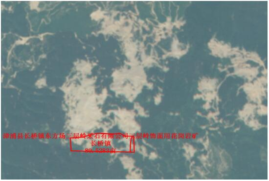
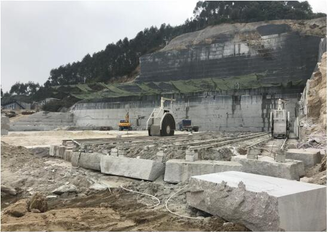
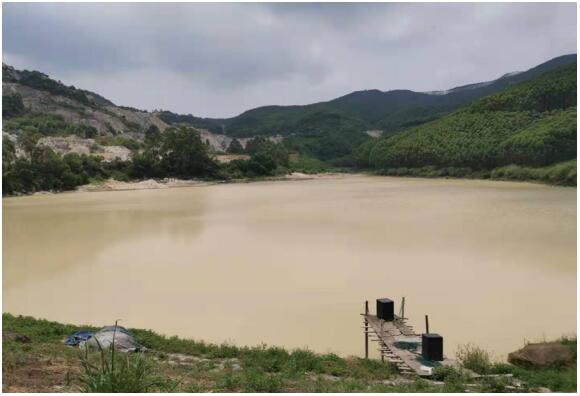
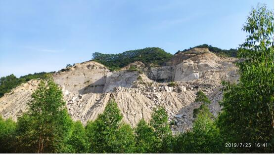
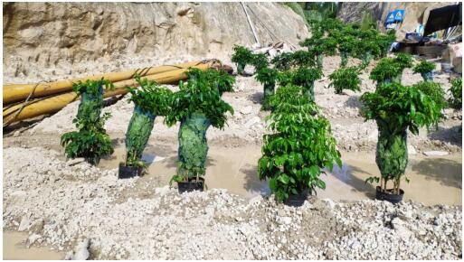
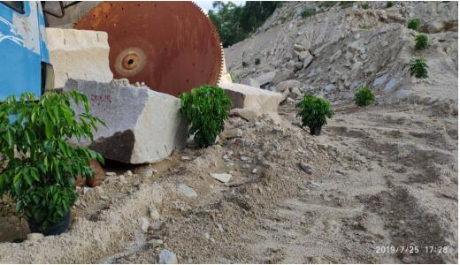
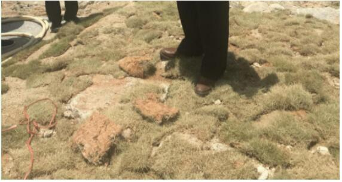
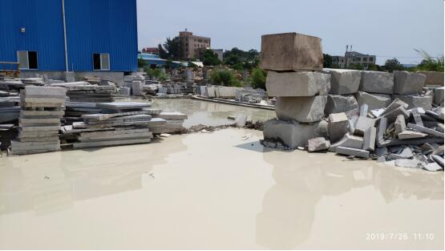
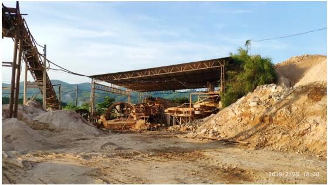

福建漳州市漳浦县矿山非法开采严重破坏生态环境
导言
EHS管理中，管好HS需要高标准，管好E不仅仅需要高标准，还需要高境界。HS是人类生存条件，H相比S更进一步，而E则是人类幸福生活的保障、福祉，新时代五个发展理念之一“绿色”正是对EHS发展最好的诠释。在当下EHS管理过程中，发生HS事故绝大部分是生产条件不达标，就是没有做好高标准，而E有问题了则是人们的发展理念出现问题。近期国家生态环境部发布两则环境违法事例正好印证E需要当地政府和企业的高境界。
福建漳州市漳浦县矿山非法开采严重破坏生态环境
2019年7月25日至29日，中央第二生态环境保护督察组在福建省漳州市漳浦县督察发现，漳浦县党委、政府及有关部门长期不作为、慢作为，石材矿山非法开采问题突出，生态恢复治理严重滞后，区域污染严重，群众反映强烈。一、基本情况
第一轮中央环境保护督察反馈指出，福建省一些地方矿山生态修复治理不力，大量废石随意倾倒，植被破坏、水土流失问题比较严重。石材加工行业整治不到位，一些企业环境管理普遍粗放，污染治理水平较低，晴天尘土飞扬，雨天遍地泥浆，常常形成“牛奶河”和“石粉山”。
福建省督察整改方案要求，从严控制饰面石材矿山开采规模，严厉打击无证非法采矿行为，全面关闭非法开采的饰面石材矿山；落实矿山生态修复制度。加快建筑饰面石材加工企业集中入园和整合提升，依法取缔关闭不符合要求的企业；强化粉尘和污水治理，完善雨污分流，严肃查处违法排污行为，2018年底前消灭“牛奶溪”。
漳州市及漳浦县整改方案提出，严厉打击无证非法采矿行为，落实矿山生态修复治理制度，深化建筑饰面石材行业专项整治，2018年6月底前消灭“牛奶溪”。
此次中央生态环境保护督察期间，群众多次投诉漳浦县非法采矿及石材加工行业污染问题。现场督察发现，群众反映情况属实，漳浦县整改不力，监管失职，生态破坏和环境污染问题依然十分严重。
二、主要问题
（一）非法开采活动猖獗。督察发现，2014年以来，漳浦县意发石材有限公司在赤岭乡蔡坑矿区长期非法开采，造成大面积山体、植被破坏，下游蔡坑水库沦为“牛奶湖”。经漳浦县初步调查，破坏商品林达到201亩，越界开采矿产品评估价值约8200万元。2015年以来，漳浦县长桥镇东方场三层岭采石有限公司长期盗采临近山体，为了逃避卫星监控，用绿网遮挡开采区域及临时工棚。

图1 长桥镇东方场三层岭采石有限公司跨越矿区开采 周边大片“挂白”（红色框内为批复的合法矿区）
经督察组进一步调查发现，漳浦县现有持证饰面石材矿山15家，其中14家越界非法开采。2015年至2017年，原国土资源部共向福建省下发450个疑似违法矿产图斑，经各地核查，实际违法图斑共计284个，其中漳浦县31个，占全省违法图斑总数的10.9%，大部分属于无证开采。
图2 盗采矿区用绿网遮挡开采区域及临时工棚，躲避卫星监控
2018年10月，原漳浦县国土资源局委托福建省闽东南地质大队对183个疑似废弃矿山图斑进行调查核实，发现违法开采矿山98个，破坏面积达9656亩。
图3 蔡坑水库沦为“牛奶湖”
.
图4 矿山开采导致大面积山体和植被破坏
（二）生态恢复治理不力。漳浦县自然资源部门和一些乡镇推进矿山生态恢复治理责任不落实，工作敷衍应付，甚至假装整改。督察发现，漳浦县所有持证在采石材矿山均未落实恢复治理方案和土地复垦方案，矿区周边均存在大片“挂白”现象，“边开采边治理”要求形同虚设。全县矿山开采导致的生态破坏面积达10180亩，但漳浦县制定的《废弃矿山综合治理规划（2018～2025年）》，仅对位于“三区两线”可视范围内的5个破坏区域制定治理方案，其中2018-2020年仅安排1个治理项目，治理面积仅122.25亩。漳浦蔡坑矿区、长桥矿区生态破坏严重，在督察组进驻后，当地政府紧急要求矿主复绿，企业将大量盆栽苗木简单覆土，甚至直接摆放在场地，搞“盆栽式复绿”。

图5 在督察组检查前突击复绿
漳浦绿地建材贸易有限公司自2014年起在绥安镇违法开山采砂，数百亩山体、林地遭到严重破坏，长期无人过问。
图6 盆栽苗木直接摆放在厂区道路
2019年7月19日，督察组检查当天，该砂场在既没有拆除设备，也未对场地进行覆土的情况下，直接在砂石、混凝土地面上铺设草皮，应付了事。现场检查时，多数草皮已经枯死。
图7 漳浦绿地建材贸易有限公司在混凝土上铺设草皮
（三）虚假整改问题突出。漳浦县目前共有石材加工企业105家，分布在6个工业集中区。漳浦县赤湖镇洋坪岭村石材加工集中区有饰面石材加工企业50家，第一轮督察期间，群众投诉该区域企业污染环境，但地方调查称群众举报不实，未发现污水外排，无组织排放也未发现超标。此次督察发现，多家企业生产废水直接外排，形成多个“牛奶塘”；厂区粉尘无组织排放严重；生产过程中石粉违法倾倒在周边农田和树林间。第一轮督察期间群众投诉赤土乡十几家板材厂将石粉倾倒在两个鱼塘内，污染水体和耕地，当地多部门现场联合调查后，不仅没有要求企业将违法填埋物依法处置，反而直接覆土掩埋，敷衍了事。
图8 石材加工企业厂区污水四溢
此外，现场督察还发现，漳浦县存在大量挖土、洗砂场，违法侵占土地和林地，破坏植被，水土流失淤积河道，生态破坏和环境污染严重，群众投诉不断。
图9 非法洗砂侵占林地破坏植被
（四）形式主义官僚主义问题突出。漳浦县石材行业生态破坏和污染问题由来已久。早在2009年，福建省人民政府就出台《关于加强建筑饰面石材行业综合整治的意见》，要求严格控制建筑饰面石材矿山开采、强化生态保护和治理恢复。2017年第一轮中央环境保护督察后，福建省整改方案再次明确要求，2017年7月，因矿产资源开发监管不到位，漳浦县政府主要领导及国土资源部门主要负责人被省政府分管副省长约谈。2017年8月以来，原省国土厅及现自然资源厅多次对漳浦县进行检查和通报，并将漳浦县列为无证非法采矿的重点打击区域。2018年3月和2019年4月，因打击非法违法采矿不力，漳州市对漳浦县人民政府两次通报。但层层监督、次次通报就是不见落实，整改要求始终停留在纸面，非法采矿导致的严重生态破坏长期得不到解决，违法时间之长、破坏程度之大，实属罕见。三、原因分析
漳浦县党委、政府及有关部门政治站位不高，主体责任严重缺失，对辖区内存在的严重生态环境问题熟视无睹，不闻不问，给生态环境造成严重破坏。对中央生态环境保护督察整改要求阳奉阴违，甚至突击整改、假装整改。对群众反映的生态环境问题漠然视之，敷衍塞责。
漳州市党委、政府作为本辖区整改工作的责任主体，对石材矿山和石材加工行业整改工作重视不够，部署不到位，检查督促不力。
福建省相关部门对全省矿山生态环境保护情况掌握不全面，对突出问题推动解决不力。
针对上述问题，督察组将进一步核实有关情况，并要求地方依法依规依纪处理、问责到位。
本文信息来源国家生态环境部
相关主题：
原文编辑: EHS资讯
原文链接: https://ehsinfo.cn/2019/08/20/福建矿山非法开采.html
版权声明: 转载请注明出处(必须保留作者署名及链接)